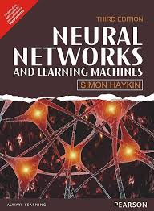

Books
-
"Deep Learning"
Authors: Ian Goodfellow, Yoshua Bengio, Aaron Courville
Total Pages: 775

Rating: 4.8/5 (1,200 reviews)
View Content -
"Neural Networks and Learning Machines"
Author: Simon Haykin
Total Pages: 906
Rating: 4.6/5 (800 reviews)
View Content (Won't Open) -
"Hands-On Machine Learning with Scikit-Learn, Keras, and TensorFlow"
Author: Aurélien Géron
Total Pages: 720
Rating: 4.9/5 (1,500 reviews)
View Content (Won't Open)